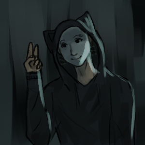

I make a da comic's

I've been making art for 16 years, and if there's one thing I learned, it's that art is communicative, and with that, here are some comics and stories that I've been working on as dream projects.